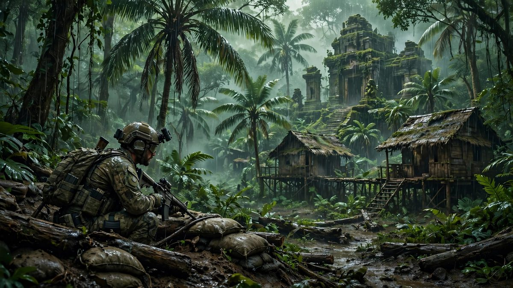

Sanhok Tips: Fast-Paced Jungle Combat Guide

Sanhok is the smallest map in PUBG at just 4 by 4 kilometres, and it plays faster than any other. Matches are shorter, the zones shrink quickly, and you are almost never more than a minute away from another squad. The jungle is dense with trees, grass and ruins, so fights happen at close and mid range, and third parties arrive within seconds of the first gunshot. If you love fast action and constant combat, Sanhok is the best map in the game. If you prefer slow, careful play, it will force you to adapt. This guide explains how to loot fast, win jungle fights and survive the pace of Sanhok.
Where to Land on Sanhok
Bootcamp is the most famous hot drop on Sanhok. The central training ground has excellent loot and draws three or four squads every match, making it the best place in the game to practise close-quarters combat. Land on the roof of the main building, grab a shotgun or SMG, and fight immediately. Paradise Resort is the other big hot drop: the hotel buildings hold great loot and the fights inside are fast and chaotic. For a calmer start, try Kampong, Ha Tinh or Pai Nan. These towns have enough loot for a full squad and usually only one enemy team nearby. Ruins and the Quarry offer good loot too, with strong positions for the mid-game. Wherever you land, loot fast. On Sanhok you should be fully equipped and moving within two minutes, because the first zone arrives quickly and the map is small enough that enemies will find you.
Fast looting rules
- Pick a building and clear it completely before moving to the next one.
- Take the first usable weapon and fight with it; do not search for a perfect gun.
- Grab a level 2 vest and helmet, then leave. Level 3 gear is a bonus, not a requirement.
- Keep at least three first aid kits and four boost items before you rotate.
Winning Close-Quarters Fights
Most Sanhok fights happen inside buildings, in the ruins or in thick jungle at under 50 metres. Shotguns like the S12K and DBS are deadly in the first minutes, and SMGs like the Vector and UMP45 dominate the mid-game. The Beryl M762 and AKM are also excellent here because their high damage wins close-range trades. When you enter a building, check corners before you move through a doorway, and listen for footsteps; sound matters more on Sanhok than on any other map because the jungle hides visual information. Use the third-person camera to peek around corners without exposing your body, and pre-fire common angles when you know an enemy is nearby. In the open jungle, crouch and move between trees instead of sprinting in a straight line. Grass hides you well at distance, so go prone to heal and reposition, but remember that enemies can hear you moving through it.
Dealing With Third Parties
Third partying is the defining feature of Sanhok. The moment you fire your weapon, nearby squads know where you are and start moving toward you. After every fight, assume someone is coming. Loot the bodies fast, heal up, and reposition to a new angle before the next team arrives. Do not stay in the same building where you just fought; it is the first place the third party will check. If you hear a fight nearby, you have a choice: join it while both teams are weak, or wait and clean up the survivors. Joining is usually better on Sanhok because the winner of the first fight will be looting and healing, which is when they are most vulnerable. Just make sure you approach from a different angle than the teams already fighting, and keep an escape route open.
Zone Play and Rotations
Sanhok zones move fast and hurt. The blue zone deals more damage here than on larger maps, so never get caught outside it. Rotate early and use the rivers and roads as guides, but avoid crossing the open rice fields in the late game without smoke cover. The final circles on Sanhok are small and often land in the jungle or the ruins, so keep a scoped rifle for spotting enemies in the grass and a close-range weapon for the final fights. Vehicles are less important here than on Erangel or Miramar because the map is small, but a UAZ or a pickup still helps you rotate through the zone quickly. The Tukshai is slow and loud, so avoid it unless you have no other option.
Frequently Asked Questions
What is the best landing spot on Sanhok?
Bootcamp has the best loot and the most action, while Paradise Resort is a close second. For a safer start with good loot, try Kampong or Pai Nan and rotate toward the centre.
Which weapons are best on Sanhok?
Close-range weapons rule here: the Beryl M762, AKM, Vector, UMP45 and S12K shotgun are all excellent. Pair one with a scoped assault rifle like the M416 so you can fight at mid range too.
How do I avoid getting third-partied on Sanhok?
Finish fights fast, loot quickly, heal, and move to a new position immediately. Do not linger where you just fought, and always keep a smoke grenade ready for a safe retreat or revive.
Download PUBG: Battlegrounds
Play free on PC or mobile — download the official game from the links below.